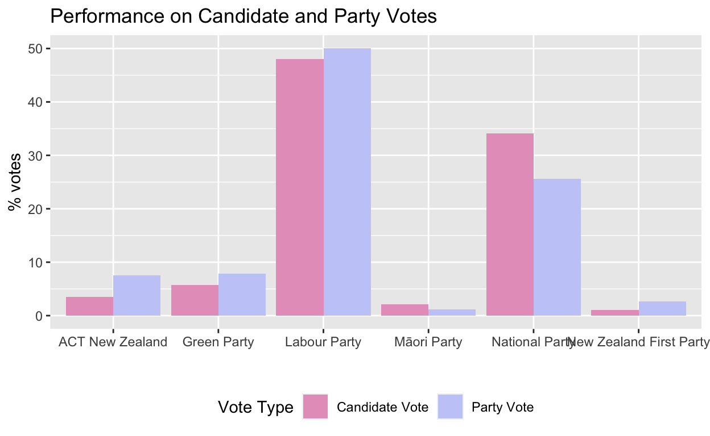

I wrote a post on Election Night laying out how the various parties performed across the 72 electorates in New Zealand. Since then, approximately half a million more special votes have been counted. A number of people, both on Twitter and in private correspondence, have asked me to update my analysis with those new numbers. Thats what this post does.
The specials did not really shift the broad picture destruction for National and elation for Labour but simply emphasised it (with the possible exeception of the Mori Party getting two MPs).This post is therefore essentially a copy-paste of my previous analysis with annotations explaining how the inclusion of the special votes has changed the story: Struck-through text is text which appeared in the original version, but is no longer true when special votes are counted. Bold text is new with special votes. The graphs and tables and in-text numbers are entirely populated with new data. You can see the pre-specials figures here. Some new analysis, including of the effect and spread of special votes, is included at the end.
Wow. What a result. The broad national narrative of Election 2020 for each party seems clear:
- Labour got a stonking victory, delivering a massive personal mandate for Jacinda Ardern
- National had a dismal night, which managed to be worse than expected
- ACT had a great night, confirming months of positive polling
- The Greens outperformed, though perhaps Labours result was marginally too good for their tastes.
- The Mori Party
might beare back from the dead - New Zealand First should be dead for good although making that prediction is perhaps never wise
However there is also much to be said about the individual constituencies at play. That is what Im going to do in this post. Im not making an argument in this post, just exploring the data to see what happens.
A couple of notes first:
These data were scraped from the Electoral Commissions website at around 1am NZT, when just under 100% of advance and ordinary votes had been counted. They may have changed marginally since then.Special votes wont be counted for some time, which, given how tight some of the constituency results were, might effect this analysis.
This analysis was conducted late at night taking advantage of my time difference from being based in Singapore and quickly soit might not be right. I have released my source code on Github, please let me know if something looks off.- Please feel free to email me at mp (at) mitchellpalmer.nz if you have any questions.
Why is this interesting?
Finding out where the votes for each party were found tells us a lot about their electoral strategy and the coalitions they have built. It also lets us find out who the most popular MPs are, aside from their party affiliation.
This election, however, it is particularly interesting for two reasons.
Firstly, because of the utter implosion of the National party vote but the smaller fall in their electorate votes, a significant proportion of Nationals seats will be filled by electorate MPs. Thus, while your electorate vote may not decide the government, it will shape the balance of power within the opposition.
Secondly, three minor parties may have managed to sieze or hold electorates: ACT retained its traditional stronghold of Epsom with an increased majority; the Mori Party have most likely siezed Waiariki; and, after a much-reported-on three-way race, the Greens look to have taken Auckland Central. Given the coat-tailing rules in MMP, a growing trend of minor parties winning electorates could substantially change the make-up of Parliament. This year, we have seen the coat-tailing rule in action for the first time in a little while, with Debbie Ngarewa-Packer coming in on the list for the Mori Party, despite the party recieving less than 5% of the party vote..
How did the parties do?

Clearly, National significantly outperformed in candidate votes compared to their party vote performance. That is mirrored in the constituency counts: National had the plurality (i.e., the most votes) of candidate votes in 26 23 electorates, but the plurality of party votes in only four one1. Why? Three possibilities occur to me (ranked in order of estimated importance):
- Electorate votes are sticky: Perhaps voters are less willing to abandon their local MP, to whom they can attach a face and a name, than parties, which after all are simply brands. Given National won the most electorates in 2017, that this stickiness favoured National is unsurprising.
- Nationals local campaigns were better than their national campaign: Perhaps the collegial nature of constituency committees and the independent mandates of MPs with their supporters meant that local campaigns worked together better than the chaotic national National Party.
- Nationals candidates were better than Labours candidates: In my view, this is definitely true in many parts of the country (e.g., Hutt South), but I struggle to think of any non-partisan reason this would be true generally. If it is true though, it certainly would help explain this phenomenon.
As an aside, readers may be surprised to see such strong candidate vote performances from ACT and Greens, both of which have been known to run party vote-focused campaigns. This can mostly be explained by strong performances in their targetted backstop seats (Epsom and Auckland Central), which they presumably seek/sought as an insurance policy to keep them in Parliament if they recieved less than 5% of the party vote. Indeed, 19.96% of ACTs total electorate votes were in Epsom and 7.79% of the Greens total electorate votes were in Auckland Central. By contrast, if Green candidate votes were equally distributed across the country, given they ran in 60 seats, one would expect them to have recieved 1.67% of their candidate votes in each seat.
As mentioned above, the National Party achieved a plurality in only four one of the 72 electorates this election. Which were those seats?
| electorate | party | party_vote_share |
|---|---|---|
| Epsom | National Party | 37.28 |
Notably absent from that list are National strongholds like Pakuranga (where Simeon Brown won by 10050), Selwyn (where Nicola Grigg won by a distance of 4968) and Judith Collins own seat of Papakura (which she took by 5583 votes). Those are a lot of traditionally National seats where another party (i.e., Labour) won the most votes. Those are seats National may well have lost in a first-past-the-post system.
But, perhaps National suffered from the success of its resurgent partners, ACT? Those are still votes for the right, so they shouldnt count as real loses, the logic might go. While that certainly does help, it doesnt make a real difference: In a good-old-fashioned two-party FPP election, National would still have lost resoundingly. When one sums the left bloc (Greens and Labour) and the right bloc (ACT and National), the right still only takes 12 9 seats out of 72 avaliable, none of which they would hold by more than 3000 2,200 votes. Even Selwyn, long Nationals safest seat or close to it, would have been marginal: The right led there by less than 700 votes. Even Epsom, long one of the bluest (in party vote terms) seats in the country, would have been held by only 349 votes.
| electorate | right_bloc | left_bloc | right_majority |
|---|---|---|---|
| Taranaki-King Country | 19499 | 17303 | 2196 |
| Waikato | 19902 | 17742 | 2160 |
| Southland | 19260 | 17426 | 1834 |
| Port Waikato | 19099 | 17726 | 1373 |
| Whangaparoa | 21523 | 20444 | 1079 |
| Tmaki | 20322 | 19282 | 1040 |
| Epsom | 20023 | 19674 | 349 |
| East Coast Bays | 18023 | 17725 | 298 |
| Pakuranga | 17585 | 17429 | 156 |
How did the candidates do?
There appears to be a strong relationship between how a party performed and how its candidates performed. Plugging the party vote and candidate vote into a simple linear regression shows that, for a major party candidate in a general electorate, 62.76% of the variation in their candidate vote can be predicted from the party vote. Once the model accounts for the overall differences between National and Labour this year, the proportion accounted for shoots up to 79.74%.
The obvious question then is What about that 20.26%? Which candidates did well? By regressing the candidate vote against both the party from which the candidate comes and that partys party vote, we can come up with the predicted result of an average National/Labour candidate standing in that seat and work out which candidates beat that benchmark. Here are the list from Labour:
And from National:
Now, we shouldnt immediately conclude from this that every Labour MP should have campaigned like Duncan Webb and every National MP should have campaigned like Chris Bishop. An MP who did a bad job spreading the party vote message in their constituency, but did a passable one promoting themselves, would do very well on this metric. But we can conclude that a constituency candidates fate is not entirely in the hands of their party they can change it in or against their own favour. (A better model would also account for incumbency bias outperformers tend to be incumbents, probably because of their preexisting local profile and perhaps also the depth of the field so as to avoid unduly punishing candidates like Helen White who run in the three-horse races.)
Where did they do well?
This will be a longer post sometime in the future. In that post, Ill see what predicts support for each of the parties based on the characteristics of the constituencies. But, in the mean time, here are the party votes cast in the general electorates aggregated into some rough regions (please excuse my poor New Zealand geography, especially residents of the Central North Island I have no reason to be bad at it. I just am.):
The aforementioned post is avaliable here: https://mitchellpalmer.shinyapps.io/Election2020Interactive/
How concentrated was each parties support? [NEW]
My intuiton was that some parties (e.g., the Greens) tend to amass their party votes in a small number of electorates, by running up large totals, whereas others have broader geoegraphical support. The easiest way to see this is to calculate the number of electorate party vote totals one must add together to get to 50% (or any arbitrary proportion) of that partys nationwide vote. These are the results of doing just that, bearing out my initial hypothesis the Greens got more than half of their votes in only 20 electorates, whereas Labour took 32 electorates to recieve 50% of their overall votes. Naturally, the Mori Party also had very concentrated support in the Mori seats.
| party | n_elecs |
|---|---|
| ACT New Zealand | 25 |
| Green Party | 20 |
| Labour Party | 32 |
| Mori Party | 5 |
| National Party | 26 |
| New Zealand First Party | 28 |
How were the special votes distributed? [NEW]
Special votes are not evenly distributed. Some electorates see many more voters casting special votes (which you must cast if you are registering on the day of the election, are overseas [like I was], or cast your vote in a different electorate to the one in which you are registered). Most commentators (and I) believe that special voters skew younger than the population as a whole I am unaware of any empirical evidence for this supposition though, although perhaps it could be found in the excellent New Zealand Election Survey. Generally, specials are expected to favour the left.
These are the electorates sorted by the percentage of their party votes cast via a special vote:
Within the general electorates, there is a very clear urban/rural divide, showing much higher special voting rates in the cities. This makes sense demographically (citydwellers tend to be younger) and geographically (in rural areas, with larger electorates, it is more unlikely that the nearest polling booth to your house or work will be outside your electorate).
The Mori electorates also all see very high special vote proportions. Apart from age (the Mori population is younger than the rest of New Zealand) and lower enrollment rates overall, I have no good theories as to why this is the geographic explanation doesnt appear to work for such large electorates.
The next question which occured to me is where were special votes pivotal to determining election outcomes? These are the electorates where the apparent winner on election night turns out, once specials are counted, to have come second:
| electorate | final_winner | runner_up | margin_election_night | margin_final |
|---|---|---|---|---|
| Maungakiekie | RADHAKRISHNAN, Priyanca | LEE, Denise | 580 | 635 |
| Northland | PRIME, Willow-Jean | KING, Matt | 729 | 163 |
| Whangrei | HENDERSON, Emily | RETI, Shane | 164 | 431 |
Electorate races though, of course, are mostly important to minor parties and to the pride of MPs and candidates. The crucial question is how special votes affect the makeup of Parliament through Party votes. That is basically a function of two things how many special votes there were overall (496834 is the answer) and how those votes divided between the parties.
This shows the overall proportions of party votes won by each party before and after specials. It confirms what I said in the introduction: Nothing really changed with specials, except that Labours lead got marginally larger and the Mori Party got enough for a second seat.
You can only really see the effects in a table:
| party | share_pre_specials | share_specials | share_post_specials |
|---|---|---|---|
| Labour Party | 49.49 | 54.75 | 50.40 |
| National Party | 26.98 | 20.06 | 25.78 |
| Green Party | 7.62 | 9.34 | 7.92 |
| ACT New Zealand | 8.03 | 5.82 | 7.65 |
| New Zealand First Party | 2.68 | 2.31 | 2.62 |
| The Opportunities Party (TOP) | 1.42 | 1.96 | 1.52 |
| New Conservative | 1.52 | 1.34 | 1.49 |
| Mori Party | 1.01 | 1.95 | 1.17 |
| Aotearoa Legalise Cannabis Party | 0.32 | 1.16 | 0.47 |
| ONE Party | 0.27 | 0.33 | 0.28 |
There is nothing too surprising there: The left wing parties did better in specials, as expected.
The overall party vote percentage National recieved did not fall massively with the inclusion of the special votes (from 26.8% before to 25.6% after), but the fact that that small 1.2% swing shifted three solidly blue electorates to having Labour pluralities in the party vote simply shows how badly National were beaten.